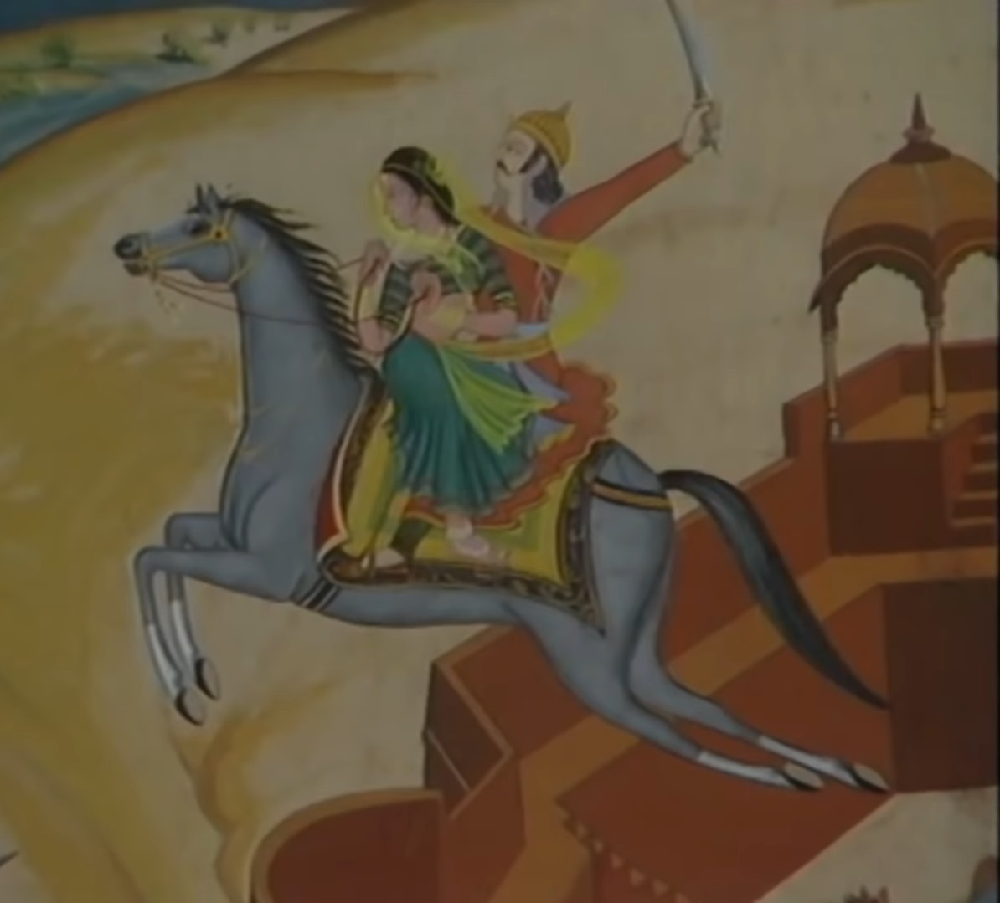
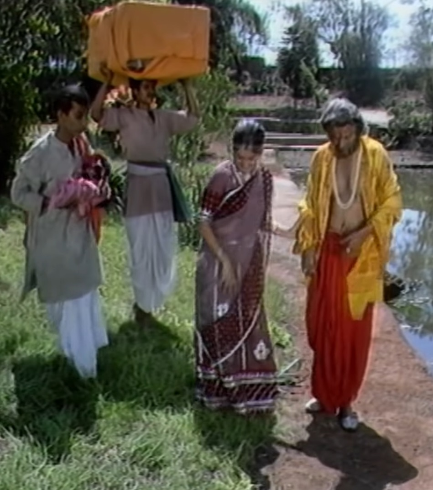

King Vikram sets out to capture Betal because he promised the sage Was. Whenever Vikram caught Betal, he used to listen to him a story and tell him to King Vikram. Asks questions on that story. Like King Vikram giving answer to his bet. According to him it would fly away again. King Vikram again goes to catch him and Betaal This time he heard another story which was the story of the king of Punyapur city. Whose name was Vallabh. The king was very powerful and brave, but he had one shortcoming. He used to loot the treasury money on every matter, due to this the king's minister got angry with the king. He warned that by making excuses to the treasury for such waste, it would empty the treasury. But the king rejected what the minister said. The king is talking about building his new palace. If he does, the minister explains to him. But the king still does not listen to him. The minister was upset about this so he told his wife that if my minister If there is a crisis on the treasury, it will be his fault. He talked about leaving the throne When he does, his wife tells him to take leave from the palace for a few days. Why don't you go on a pilgrimage? The minister agrees and both Set out on a journey. When both of them stop for food on the way, they We sit and eat near a pond. A small island emerges from the pond and A mysterious girl was sitting on that island and playing the flute. Seeing this the minister Goes to inform this to the king. After hearing this the king told the girl Goes alone to see. The king reaches that girl. king girl When he asks about her, she tells that she is a Gandharva girl and Father is Gandharva king. I liked the person her father wanted her to marry. So my father sent me to this magical island to meet a demon. Sent to. That monster used to attack us, my father It was agreed that he would give them valuable gifts on every Amavasya night and today It is a new moon night, so go away from here, otherwise that demon will kill you. Will give. King Gandharva provides protection to the girl and protects her from the demon. Promises to save. The Gandharva girl tells the king that if he If he saves her from the demon, she will stay with him for the rest of her life. the monster comes there A fight starts between the two and the king throws a stone to kill the demon king. When he wakes up, the minister comes with his soldiers and kills the demon with arrows. gives. The king becomes happy with the wisdom of the minister. King Gandharva's daughter Please inform and invite everyone about your marriage. and gives orders to all the artists and rewards them with money from the treasury. asks the king to again waste his money unnecessarily When he talks, the minister suffers a heart attack and dies. Is. Now Betal stops the story and asks Vikram to tell the minister about the king. He should be happy with the news but why did he become so sad that he died? It's done. King Vikram tells Betal that the minister has become a fool due to his worries. That there is not as much money in the treasury as the king wanted to spend on the marriage and the king If the king does not obey his orders then he will be insulted and if his wish is not fulfilled Had it been so, the king would have lost his respect, hence he lost his life in sorrow. minister's After death, King Vallabh understands everything and feels ashamed of his actions. Is. Hearing the answer of King Vikram, Betal flies again and goes to his tree. Hangs up.